10 phút (bản cuối không dưới 8:30). Giới thiệu 3 tính năng chính của Promer: AI Ad Animation · AI UGC Ads · Video Ad Clone. Mở bằng cả chiến dịch đã xong chạy liền một mạch, rồi lùi lại dựng từng quảng cáo bằng đúng một tính năng, mỗi phần kèm một chỗ hay hỏng và cách tránh, cuối cùng chiếu lại chiến dịch.
| Video gốc | Số đo | Lấy gì | Đổi gì |
|---|---|---|---|
| Higgsfield AI · I Spent 72 Hours Making This AI Commercial With Seedance 2.5 (Every Prompt I Used) | 115.013 view sau 4 ngày · 27:55 | Khung kể: chiếu quảng cáo hoàn chỉnh trước → "ba nhân vật, một quảng cáo" → dựng từng phần → chiếu lại bản cuối | Ba nhân vật thành ba quảng cáo, ba việc; 28 phút gọn còn 10; một app |
| ElevenLabs · How to Make Viral AI UGC Ads in 2026 (Full Workflow) | 134.597 view · 8:23 | Đặt sản phẩm vào tay diễn viên AI, lưới góc sản phẩm cho đúng góc | Làm trong một bước của AI UGC Ads |
| Youri van Hofwegen · How to Make Realistic UGC Ads with AI (Full Course) | 92.155 view · 1 tháng · 11:07 | Độ dài khoảng 10–11 phút là chuẩn của chủ đề | Không gọi "full course" |
| Chase Chappell · I Cloned 100 Winning Ads with Ai in 4 min | 23.308 view · 20:30 | Mô phỏng quảng cáo đối thủ đang thắng | Một quảng cáo nến đã chạy lâu; nói rõ chép cấu trúc, không chép thương hiệu |
| taysthetic · how i turn product images into (animated) video ads using AI | 522.223 view · 18:13 | Đặt ảnh tĩnh cạnh video để so | Thêm phần giữ đúng nhãn |
Khoảng trống mình lấp: các video top ghép 4 đến 8 công cụ (Nano Banana, Veo, Kling, Seedance, ElevenLabs, CapCut). Chưa video nào làm đủ một chiến dịch 3 loại quảng cáo trong một app, kèm chỗ hỏng của từng loại.
Không trùng video đã đăng: lời hứa "1 ảnh → 3 quảng cáo" đã có ở S03 và C01 nên không dùng làm câu mở; sản phẩm hũ nến chưa video nào dùng; cách mở "đoán xem cái nào được quay" chưa có.
Mỗi phần có hình tham chiếu Pinterest (tìm 03/11/2026, không đăng nhập nên Pinterest khoá link từng pin; link dẫn tới trang tìm kiếm cùng từ khoá) hoặc ảnh UI Promer thật. Hình chỉ để hình dung, chưa phải hình cuối.
Hình: Ba quảng cáo hũ nến chạy liền (8 s + 20 s + 20 s). Chữ to "WHICH ONE WAS FILMED?", dấu "?" trên từng khung; giây 40: "None of them."
Người xem mang về: Thấy đích đến trước khi học
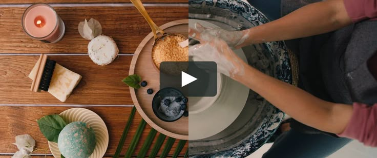
Hình: Ba thẻ: Stop the scroll · Build trust · Replace a tired ad, đặt lên phễu mua hàng
Người xem mang về: Biết vì sao một shop cần 3 loại, không phải 1
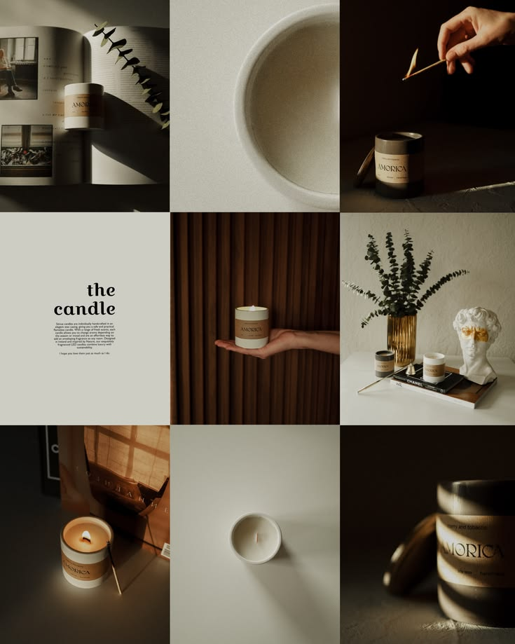
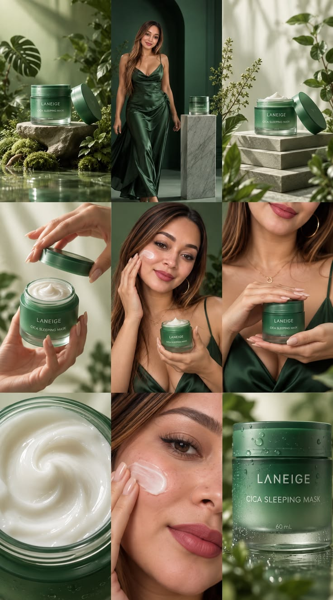
Hình: Hũ nến chụp nhiều góc; 4 ảnh hỏng bị gạch (loá nhãn, nghiêng, cắt mép, nền bừa), 1 ảnh đúng được tick
Người xem mang về: Cách chụp ảnh dùng được cho mọi công cụ AI
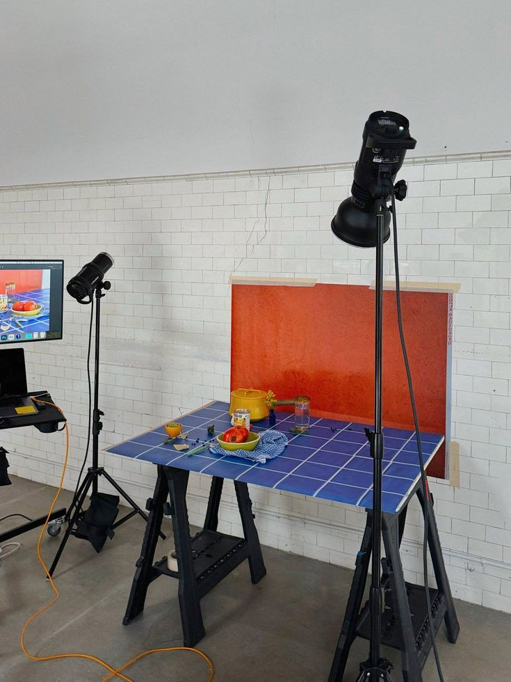
Hình: UI thật: chọn quảng cáo tĩnh → cấu hình (khổ, độ dài, chất lượng, tiếng) → phân tích → chọn ý tưởng chuyển động hoặc Add my idea → ra video
Người xem mang về: Ý chuyển động có dòng "Keep" (giữ nhãn) và "End" (khung kết)
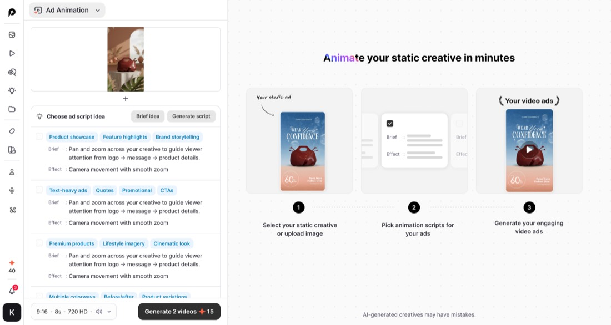
Hình: Hai video cạnh nhau (máy xoay quanh: nhãn chảy, khoanh đỏ · máy đẩy thẳng: nhãn đứng yên); 3 khung cuối xếp hàng, chọn khung sạch
Người xem mang về: Tiêu chí chọn clip dùng được với mọi công cụ
Hình: Thẻ nhỏ: thời gian làm [đo khi làm]
Không cần hình tham chiếu: thẻ chữ.
Hình: UI thật: chọn sản phẩm + góc → kiểu video → avatar trong thư viện khoảng 5.000 → giọng → kịch bản tự chia Hook · Message · Visual · CTA → tạo → phụ đề
Người xem mang về: Kịch bản 4 nhịp; chọn creator giống người mua
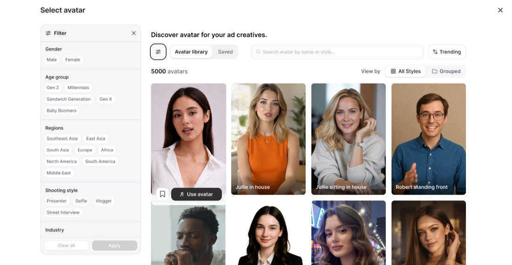
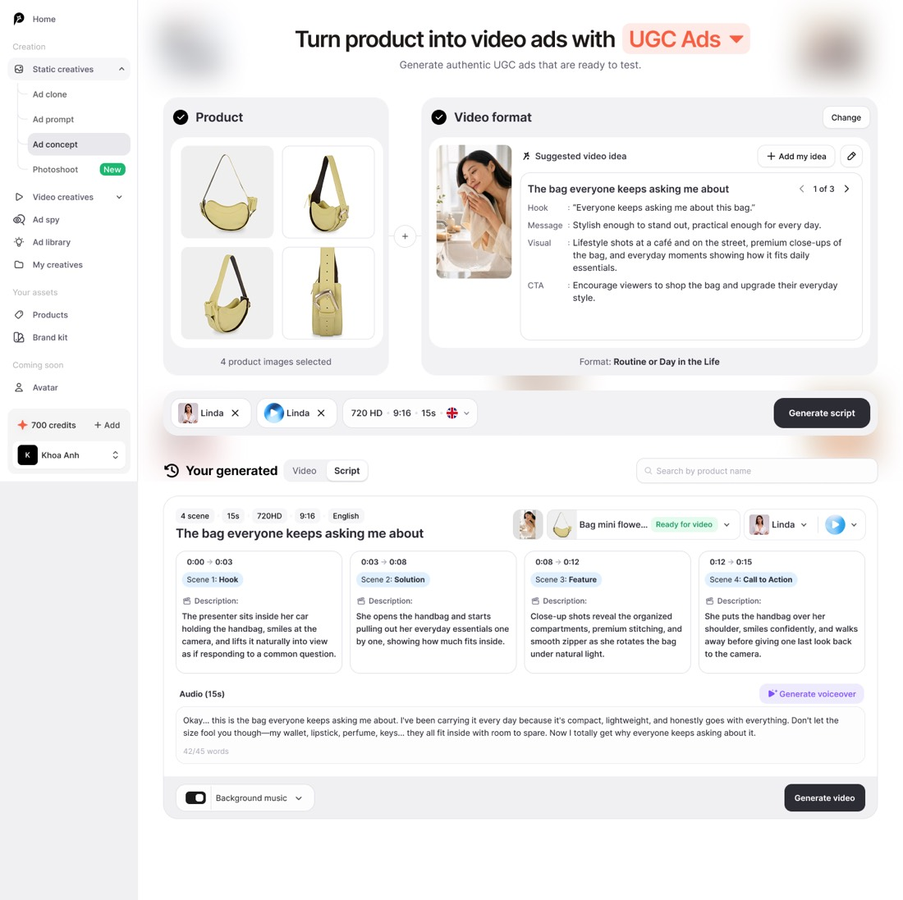
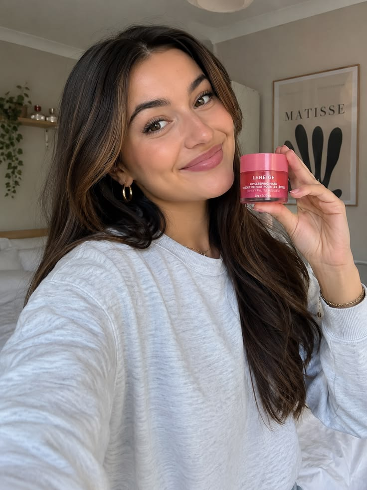
Hình: Ba ô kiểm trên khung UGC; góc khung ghi "AI-generated creator"
Người xem mang về: 3 điều kiểm mọi video UGC AI
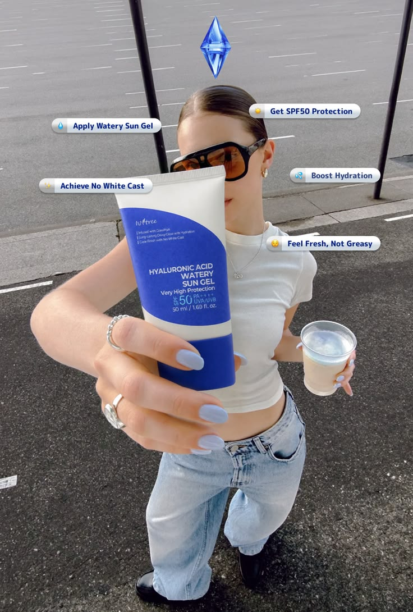
Hình: UI thật: chọn ảnh sản phẩm → chọn mẫu trong thư viện 400 quảng cáo thắng → phân tích (cảnh, công thức, độ hợp sản phẩm) → kịch bản 7 cảnh có avatar + giọng → tạo clip 0/7 → 7/7 → render
Người xem mang về: Bắt đầu từ cấu trúc đã chạy lâu, không từ trang trắng
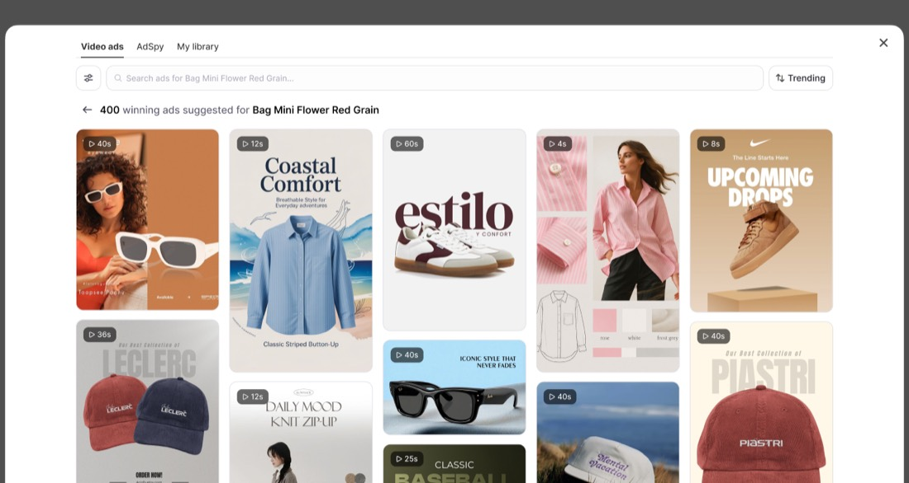
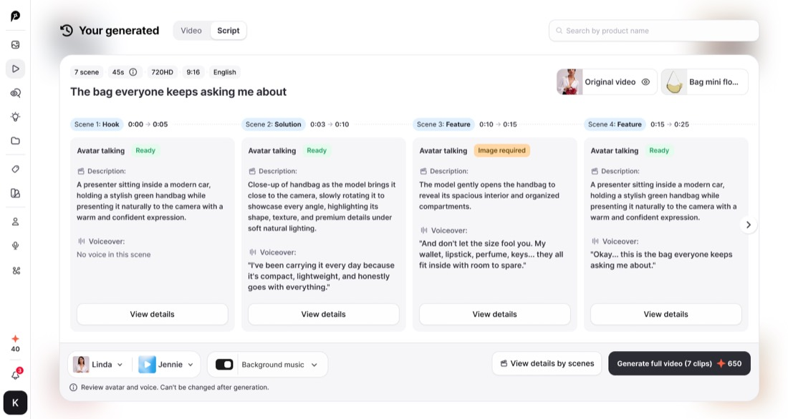
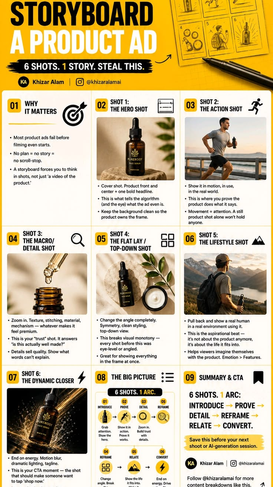
Hình: Hai cột: Keep (thứ tự, nhịp, độ dài) · Never copy (logo, người, câu chữ, lời hứa), gạch đỏ
Người xem mang về: Chép cấu trúc, không chép thương hiệu
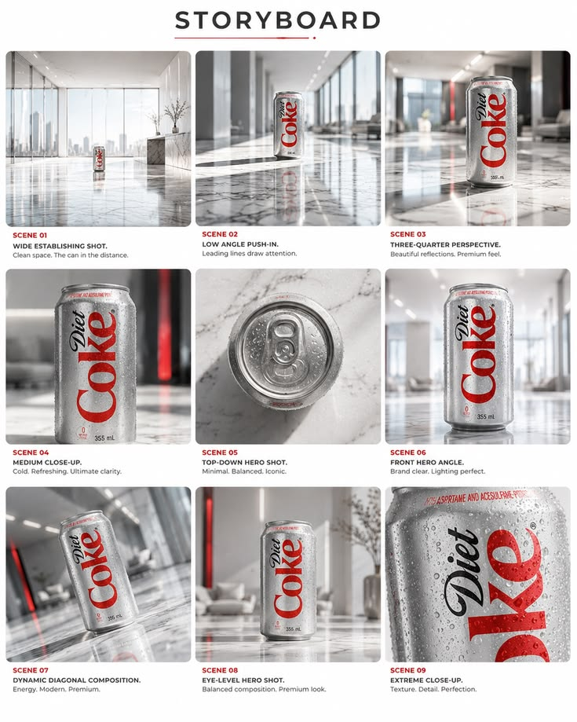
Hình: Quảng cáo 1 vào Reels, quảng cáo 2 vào trang sản phẩm, quảng cáo 3 thay bản đã mệt trên Meta; phiếu 5 dòng tick dần
Người xem mang về: Biết quảng cáo nào chạy ở đâu
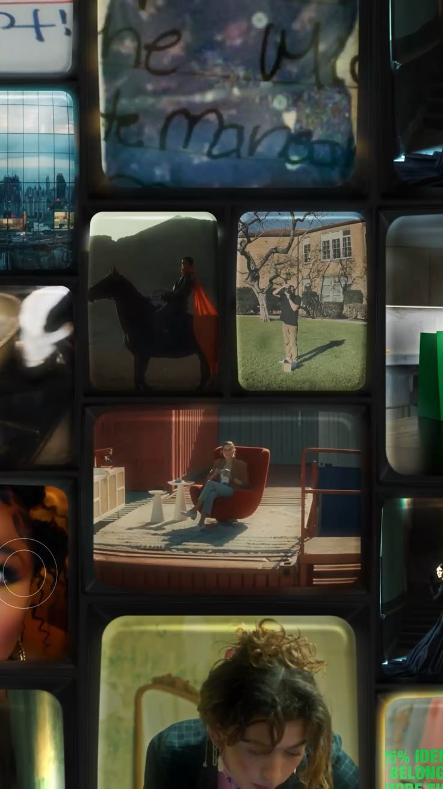
Hình: 3 quảng cáo chạy lại liền mạch
Người xem mang về: Khép vòng: thấy lại đích đến sau khi đã biết cách làm
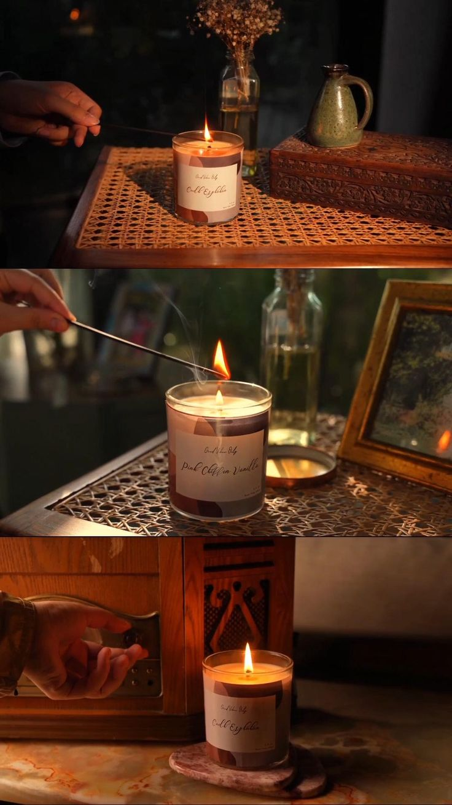
Hình: "Which one would you run first?" + logo Promer + màn kết YouTube
Người xem mang về: Bình luận chọn loại
Không cần hình tham chiếu: thẻ chữ.
Anh duyệt khung này thì bước kế là dựng storyboard A và B cùng số cảnh, cùng mốc giây để anh ghép chéo.